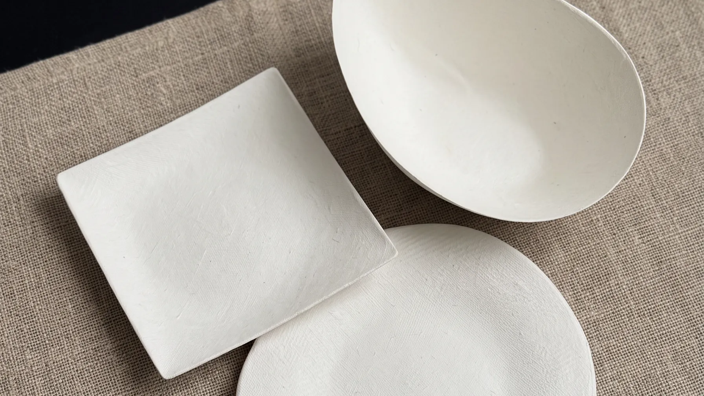
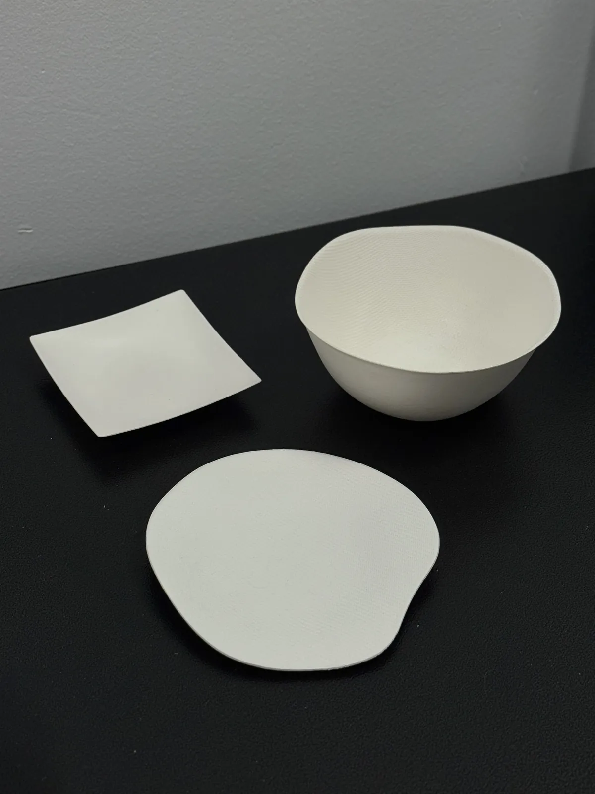

A
精致餐饮Fine Dining
方碟、六角碗、椭圆盘构成基础套系。轮廓清晰，适合摆盘构图与分餐节奏。Square Plate, Hex Bowl, and Oval Plate form the core set. Clear silhouettes for plating and portioning.
方碟 · 六角碗 · 椭圆盘

一次性餐具设计Disposable Tableware Design
浮格为餐饮、酒店、活动与品牌提供一次性餐具的设计与定制。从比例、材质到表面肌理，为每一种场景做一套合适的器物。 FUGE designs and customizes disposable tableware for restaurants, hotels, events, and brands — from proportion and material to surface texture.
01 定位Positioning
我们不生产餐具，
我们为餐桌设计器物。
We don't make tableware.
We design objects for the table.
纸浆材质可以被塑造成任何形状。难的是决定哪一种形状值得出现在某一张桌子上。浮格的工作是从场景出发，选择比例、边缘高度与肌理，让一次性餐具看起来像被认真对待过。 Pulp can be formed into almost any shape. The harder task is deciding which shape deserves to be on a given table. FUGE works from the scene inward — choosing proportion, rim height, and texture so disposable tableware reads as considered.
02 作品Selected Works
八件在售器型，均可定制尺寸、颜色、纹理与印刷。 Eight forms in production, all customizable in size, color, texture, and print.
全部产品All products03 场景By Scenario
A
方碟、六角碗、椭圆盘构成基础套系。轮廓清晰，适合摆盘构图与分餐节奏。Square Plate, Hex Bowl, and Oval Plate form the core set. Clear silhouettes for plating and portioning.
方碟 · 六角碗 · 椭圆盘
B
浅口碗与深口碗覆盖单人份与简餐。可做品牌压纹与专属色。Shallow and Deep Bowl cover single portions and light meals. Embossing and custom colors available.
浅口碗 · 深口碗
C
花瓣碗与三角碗适合甜品与仪式感场景，可做系列化造型扩展。Petal and Tri Bowl suit desserts and ceremonial settings, expandable into full form families.
花瓣碗 · 三角碗
D
不规则圆盘留白充足，适合沙拉、冷盘与需要突出食材色彩的画面。Organic Plate offers generous negative space for salads, cold dishes, and food-forward presentation.
不规则圆盘
04 合作Process
说明用途、数量与时间。Tell us the use, quantity, and timeline.
结合品牌调性定器型与材质方向。Align form and material with your brand.
围绕尺寸、纹理与印刷效果细化。Refine size, texture, and print result.
按项目节奏完成生产与交付。Production and delivery on your schedule.

材质Material
纸浆的纤维
不必被抹平
Pulp fiber
needn't be erased
哑光表面保留天然纸浆纤维的肌理与细微颗粒感。上釉会掩盖它，但那是这个材质最有价值的部分。 The matte surface keeps the natural fiber texture and fine grain of pulp. Glazing would hide it, but that texture is the material's most valuable quality.
联系Contact
告诉我们
你的餐桌
Tell us
about your table